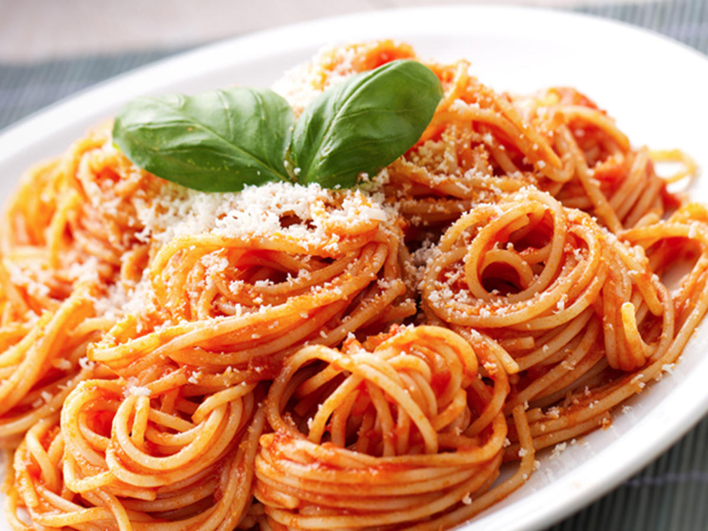

Pasta

Description
This homemade pasta recipe is our new favorite cooking project! Lately, Jack and I have been spending
even more time than usual in the kitchen, experimenting with bread, baked goods, and even okonomiyaki.
But we keep coming back to homemade pasta. It’s super fun to make together, and it only requires a handful
of basic ingredients. Of course, the fact that it’s absolutely delicious doesn’t hurt either.
Ingredients
- All-purpose flour
- Eggs
- Olive Oil
- Salt
Steps
- First, make a nest with the flour on a clean work surface. Add the remaining ingredients to the center
and use a fork to gently break up the eggs. Try to keep the flour walls intact as best as you can!
- Next, use your hands to gently mix in the flour. Continue working the dough to bring it together into
a shaggy ball.
- Then, knead! At the beginning, the dough should feel pretty dry, but stick with it! It might not feel
like it’s going to come together, but after 8-10 minutes of kneading, it should become cohesive and
smooth.